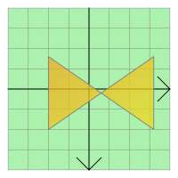

QGraphicsPolygonItem Class
The QGraphicsPolygonItem class provides a polygon item that you can add to a QGraphicsScene. More...
| Header: | #include <QGraphicsPolygonItem> |
| CMake: | find_package(Qt6 REQUIRED COMPONENTS Widgets) target_link_libraries(mytarget PRIVATE Qt6::Widgets) |
| qmake: | QT += widgets |
| Inherits: | QAbstractGraphicsShapeItem |
Public Types
| enum | anonymous { Type } |
Public Functions
| QGraphicsPolygonItem(QGraphicsItem *parent = nullptr) | |
| QGraphicsPolygonItem(const QPolygonF &polygon, QGraphicsItem *parent = nullptr) | |
| virtual | ~QGraphicsPolygonItem() |
| Qt::FillRule | fillRule() const |
| QPolygonF | polygon() const |
| void | setFillRule(Qt::FillRule rule) |
| void | setPolygon(const QPolygonF &polygon) |
Reimplemented Public Functions
| virtual QRectF | boundingRect() const override |
| virtual bool | contains(const QPointF &point) const override |
| virtual bool | isObscuredBy(const QGraphicsItem *item) const override |
| virtual QPainterPath | opaqueArea() const override |
| virtual void | paint(QPainter *painter, const QStyleOptionGraphicsItem *option, QWidget *widget = nullptr) override |
| virtual QPainterPath | shape() const override |
| virtual int | type() const override |
Detailed Description
To set the item's polygon, pass a QPolygonF to QGraphicsPolygonItem's constructor, or call the setPolygon() function. The polygon() function returns the current polygon.

QGraphicsPolygonItem uses the polygon and the pen width to provide a reasonable implementation of boundingRect(), shape(), and contains(). The paint() function draws the polygon using the item's associated pen and brush, which you can set by calling the setPen() and setBrush() functions.
See also QGraphicsPathItem, QGraphicsRectItem, QGraphicsEllipseItem, QGraphicsTextItem, QGraphicsLineItem, QGraphicsPixmapItem, and Graphics View Framework.
Member Type Documentation
enum QGraphicsPolygonItem::anonymous
The value returned by the virtual type() function.
| Constant | Value | Description |
|---|---|---|
QGraphicsPolygonItem::Type | 5 | A graphics polygon item |
Member Function Documentation
[explicit] QGraphicsPolygonItem::QGraphicsPolygonItem(QGraphicsItem *parent = nullptr)
Constructs a QGraphicsPolygonItem. parent is passed to QAbstractGraphicsShapeItem's constructor.
See also QGraphicsScene::addItem().
[explicit] QGraphicsPolygonItem::QGraphicsPolygonItem(const QPolygonF &polygon, QGraphicsItem *parent = nullptr)
Constructs a QGraphicsPolygonItem with polygon as the default polygon. parent is passed to QAbstractGraphicsShapeItem's constructor.
See also QGraphicsScene::addItem().
[virtual noexcept] QGraphicsPolygonItem::~QGraphicsPolygonItem()
Destroys the QGraphicsPolygonItem.
[override virtual] QRectF QGraphicsPolygonItem::boundingRect() const
Reimplements: QGraphicsItem::boundingRect() const.
[override virtual] bool QGraphicsPolygonItem::contains(const QPointF &point) const
Reimplements: QGraphicsItem::contains(const QPointF &point) const.
Qt::FillRule QGraphicsPolygonItem::fillRule() const
Returns the fill rule of the polygon. The default fill rule is Qt::OddEvenFill.
See also setFillRule(), QPainterPath::fillRule(), and QPainter::drawPolygon().
[override virtual] bool QGraphicsPolygonItem::isObscuredBy(const QGraphicsItem *item) const
Reimplements: QAbstractGraphicsShapeItem::isObscuredBy(const QGraphicsItem *item) const.
[override virtual] QPainterPath QGraphicsPolygonItem::opaqueArea() const
Reimplements: QAbstractGraphicsShapeItem::opaqueArea() const.
[override virtual] void QGraphicsPolygonItem::paint(QPainter *painter, const QStyleOptionGraphicsItem *option, QWidget *widget = nullptr)
Reimplements: QGraphicsItem::paint(QPainter *painter, const QStyleOptionGraphicsItem *option, QWidget *widget).
QPolygonF QGraphicsPolygonItem::polygon() const
Returns the item's polygon, or an empty polygon if no polygon has been set.
See also setPolygon().
void QGraphicsPolygonItem::setFillRule(Qt::FillRule rule)
Sets the fill rule of the polygon to rule. The default fill rule is Qt::OddEvenFill.
See also fillRule(), QPainterPath::fillRule(), and QPainter::drawPolygon().
void QGraphicsPolygonItem::setPolygon(const QPolygonF &polygon)
Sets the item's polygon to be the given polygon.
See also polygon().
[override virtual] QPainterPath QGraphicsPolygonItem::shape() const
Reimplements: QGraphicsItem::shape() const.
[override virtual] int QGraphicsPolygonItem::type() const
Reimplements: QGraphicsItem::type() const.